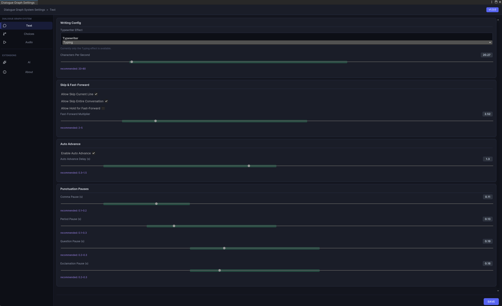
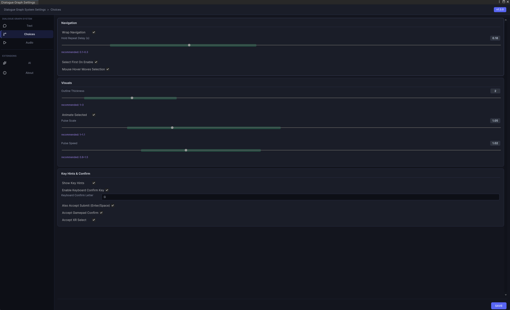
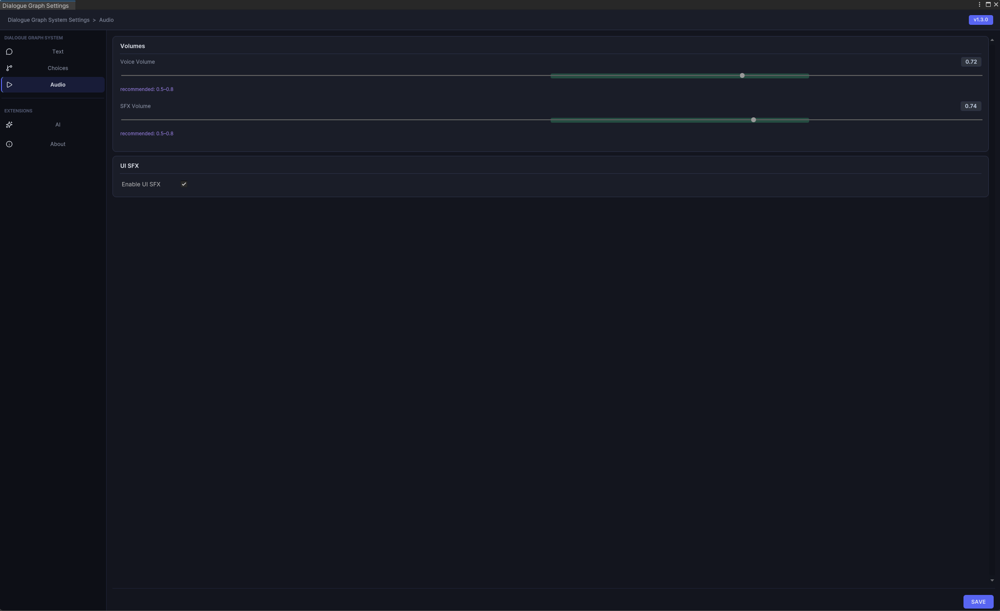

Settings System
The settings system centralizes runtime behavior that would otherwise be scattered across prefabs and scripts.
Runtime model
DialogSettingsRuntime loads a master settings asset from Resources and exposes helper accessors for text, choice, input, and audio settings. DialogManager uses these settings to resolve effective runtime behavior, with optional local overrides on the component.
Settings categories
- Text: reveal effect mode, speed, fast-forward, skip, autoplay, punctuation pauses.
- Choices: navigation, hover selection, outline styling, pulse animation, hint and confirm behavior.
- Input: legacy-style key and axis configuration.
- Audio: volume, UI SFX, and stop/fade behavior.
Editor window
Open Tools > Dialog System > Settings. The window creates the settings assets if they do not already exist and groups configuration into separate panels.
Settings editor

Recommended visual for this page.
Choice settings

Button layout, input key mappings, and display timing for choice nodes.
Audio settings

Audio source assignment, volume sliders, and UI sound event bindings.
AI settings

Provider selection, endpoint routing, and prompt-mode configuration for the AI extension.